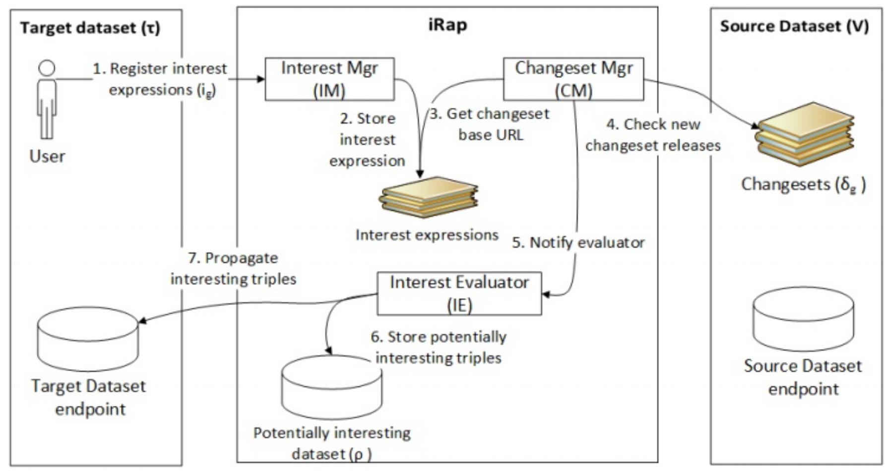

Many LOD datasets, such as DBpedia and LinkedGeoData, are voluminous and process large amounts of requests from diverse applications. Many data products and services rely on full or partial local LOD replications to ensure faster querying and processing. While such replicas enhance the flexibility of information sharing and integration infrastructures, they also introduce data duplication with all the associated undesirable consequences. Given the evolving nature of the original and authoritative datasets, to ensure consistent and up-to-date replicas frequent replacements are required at a great cost.
We introduce an approach for interest-based RDF update propagation, which propagates only interesting parts of updates from the source to the target dataset. Effectively, this enables remote applications to ‘subscribe’ to relevant datasets and consistently reflect the necessary changes locally without the need to frequently replace the entire dataset (or a relevant subset). Our approach is based on a formal definition for graph pattern-based interest expressions that is used to filter interesting parts of updates from the source. We implement the approach in the iRap framework and perform a comprehensive evaluation based on DBpedia Live updates, to confirm the validity and value of our approach.
 Figure: Architecture of the iRap interest-based RDF update propagation framework.